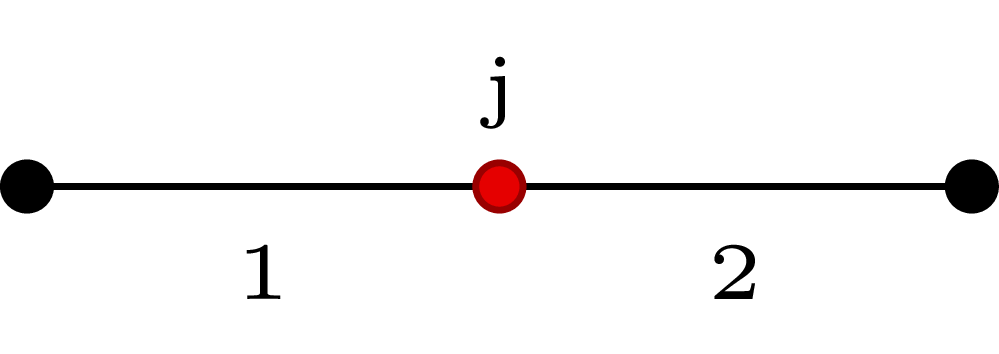

conjunctions.jl |
|||||||||||||||||||||
|---|---|---|---|---|---|---|---|---|---|---|---|---|---|---|---|---|---|---|---|---|---|
|

In a conjunction the left hand side vessel is called parent vessel and the right hand side vessel is called daughter vessel. The conjunction is solved by imposing the conservation of mass and total pressure at the interface node \(j\). Two additional relations are obtained by extrapolating the outgoing characteristics from the two vessels. From parent vessel outlet we have \[
W_1 = u_1 + 4c_1,
\] and for the daughter vessel inlet we have \[
W_2 = u_2 - 4c_2.
\] The mass conservation reads \(A_1u_1 - A_2u_2 = 0\), and the total pressure conservation requires \(P_{t1} = P_{t2}\). By defining the unknown vector \(U\) as \[
U = \{U_i\} = \left\{ \begin{array}{c}
u_1 \\
u_2 \\
A_1^{1/4} \\
A_2^{1/4}
\end{array} \right\} , \quad i =1, ..., 4,
\] the four relations read \[
F = \left\{f_i \right\} =
\begin{cases}
U_1 + 4k_1U_3 - W_1^* = 0, \\
U_2 - 4k_2U_4 - W_2^* = 0, \\
U_1U_3^4 - U_2U_4^4 = 0, \\
\beta_1 \left(\tfrac{U_3^2}{A_{01}^{1/2}} -1 \right) +
\frac{1}{2}\rho U_1^2 -
\beta_2 \left(\tfrac{U_4^2}{A_{02}^{1/2}} -1 \right) -
\frac{1}{2}\rho U_2^2 = 0,
\end{cases}
\] where \(c_i = k_i A_i^{1/4}\), \(k_i = \sqrt{3/2 \gamma_i}\). \(F(U)=0\) is solved iteratively with Newton’s method 1 \[
\begin{cases}
J \cdot \delta U = - F(U), \\
U^{new} = U + \delta U,
\end{cases}
\] where \(J\) is the Jacobian \[
J = \left[ \begin{array}{cccc}
1 & 0 & 4k_1 & 0 \\
0 & 1 & 0 & -4k_2 \\
U_3^4 & -U_4^4 & 4U_1 U_3^3 & -4 U_2 U_4^3 \\
\rho U_1 & -\rho U_2 & 2 \beta_1 U_3/A_{01}^{1/2} &
-2\beta_2 U_4/A_{02}^{1/2}
\end{array} \right].
\] The entire process is handled by |
|
||||||||||||||||||||
|
function
|
function solveConjunction(b :: Blood, v1 :: Vessel, v2 :: Vessel)
U = [v1.u[end],
v2.u[ 1 ],
sqrt(sqrt(v1.A[end])),
sqrt(sqrt(v2.A[ 1 ]))]
k1 = sqrt(0.5*3*v1.gamma[end])
k2 = sqrt(0.5*3*v2.gamma[ 1 ])
k = [k1, k2]
|
||||||||||||||||||||
|
Riemann invariants are initialised by |
W = calculateWstarConj(U, k)
J = calculateJacobianConj(b, v1, v2, U, k)
F = calculateFofUconj(b, v1, v2, U, k, W)
|
||||||||||||||||||||
|
Newton-Raphson method iterates until a tolerance on the error is met. The tolerance is defined on \(U\) and \(F\). |
nr_tol_U = 1.e-5
nr_tol_F = 1.e-5
|
||||||||||||||||||||
|
At the beginning of each iteration, \(\delta U\) is calculated by means of LU decomposition by julia’s command |
while true
dU = J\(-F)
U_new = U + 0.01*dU
|
||||||||||||||||||||
|
In the case the solution diverges, \(F\) will contain |
if any(isnan(dot(F,F)))
println(F)
break
end
|
||||||||||||||||||||
|
When all the elements in \(\delta U\) and \(F\) meet the set tolerances, the solver stops the iterative loop. |
if all(abs(dU) .<= nr_tol_U) || all(abs(F) .<= nr_tol_F)
U = U_new
break
|
||||||||||||||||||||
|
If tolerances are not met, new \(U\), \(W\), and \(F\) vectors are computed and a new iteration starts. |
else
U = U_new
W = calculateWstarConj(U, k)
F = calculateFofUconj(b, v1, v2, U, k, W)
end
end
|
||||||||||||||||||||
|
Once the solution is found, quantities at both sides of the interface are updated. |
v1.u[end] = U[1]
v2.u[ 1 ] = U[2]
v1.A[end] = U[3]*U[3]*U[3]*U[3]
v1.Q[end] = v1.u[end]*v1.A[end]
v2.A[ 1 ] = U[4]^4
v2.Q[ 1 ] = v2.u[1]*v2.A[1]
v1.P[end] = pressure(v1.A[end], v1.A0[end], v1.beta[end], v1.Pext)
v2.P[ 1 ] = pressure(v2.A[ 1 ], v2.A0[ 1 ], v2.beta[ 1 ], v2.Pext)
v1.c[end] = waveSpeed(v1.A[end], v1.gamma[end])
v2.c[ 1 ] = waveSpeed(v2.A[ 1 ], v2.gamma[ 1 ])
end
|
||||||||||||||||||||
|
function
|
function calculateWstarConj(U :: Array, k :: Array)
W1 = U[1] + 4*k[1] * U[3]
W2 = U[2] - 4*k[2] * U[4]
return [W1, W2]
end
|
||||||||||||||||||||
|
function
Static pressure conservation can be imposed by replacing
|
function calculateFofUconj(b :: Blood, v1 :: Vessel, v2 :: Vessel,
U :: Array, k :: Array, W :: Array)
f1 = U[1] + 4*k[1]*U[3] - W[1]
f2 = U[2] - 4*k[2]*U[4] - W[2]
f3 = U[1]*(U[3]*U[3]*U[3]*U[3]) - U[2]*(U[4]*U[4]*U[4]*U[4])
f4 = 0.5*b.rho*U[1]*U[1] + v1.beta[end]*(U[3]*U[3]/sqrt(v1.A0[end]) - 1) -
( 0.5*b.rho*U[2]*U[2] + v2.beta[ 1 ]*(U[4]*U[4]/sqrt(v2.A0[ 1 ]) - 1) )
return [f1, f2, f3, f4]
end
|
||||||||||||||||||||
|
function
The conservation of static pressure is imposed by setting to zero elements \(J_{4,1}\) and \(J_{4,2}\).
|
function calculateJacobianConj(b :: Blood, v1 :: Vessel, v2 :: Vessel,
U :: Array, k :: Array)
J = eye(4)
J[1,3] = 4*k[1]
J[2,4] = -4*k[2]
J[3,1] = U[3]*U[3]*U[3]*U[3]
J[3,2] = -U[4]*U[4]*U[4]*U[4]
J[3,3] = 4*U[1]*(U[3]*U[3]*U[3]^3)
J[3,4] = -4*U[2]*(U[4]*U[4]*U[4]^3)
J[4,3] = 2*v1.beta[end]*U[3]/sqrt(v1.A0[end])
J[4,4] = -2*v2.beta[ 1 ]*U[4]/sqrt(v2.A0[ 1 ])
J[4,1] = b.rho*U[1]
J[4,2] = -b.rho*U[2]
return J
end
|
||||||||||||||||||||
References
|
|